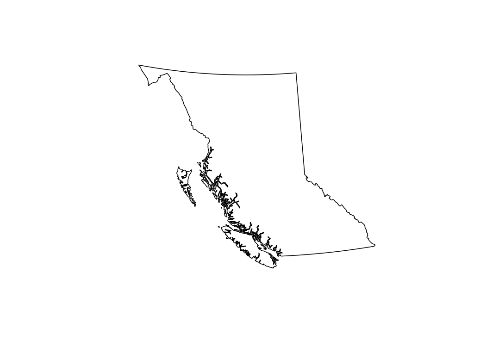

An R package of spatial map layers for British Columbia.
bcmaps provides access to various spatial layers of British Columbia, such as administrative boundaries, natural resource management boundaries, watercourses, census boundaries, etc. All layers are available as sf objects in the BC Albers projection, which is the B.C. Government standard.
Most layers are accessed directly from the B.C. Data Catalogue using the bcdata R package under the hood. See each layer’s individual help file for more detail.
IMPORTANT NOTE Support for Spatial objects (
sp) was removed in {bcmaps} v1.3.0. Please usesfobjects with {bcmaps}. A discussion on the evolution of the spatial software stack in R can be found here: https://r-spatial.org/r/2022/04/12/evolution.html.
Installation
You can install bcmaps from CRAN:
install.packages("bcmaps")To install the development version of the bcmaps package, you need to install the remotes package then the bcmaps package.
install.packages("remotes")
remotes::install_github("bcgov/bcmaps")Quick Start
To see the layers that are available, run the available_layers() function:
Most layers are accessible by a shortcut function by the same name as the object. Then you can use the data as you would any sf object.
library(sf)
bc <- bc_bound()
plot(st_geometry(bc))
Vignettes
Getting Started with bcmaps
Working with bcmaps layers and point data
You can also view vignettes by typing browseVignettes("bcmaps") in your R session after you install bcmaps.
Getting Help or Reporting an Issue
To report bugs/issues/feature requests, please file an issue.
How to Contribute
Pull requests of new B.C. layers are welcome. If you would like to contribute to the package, please see our CONTRIBUTING guidelines.
Please note that this project is released with a Contributor Code of Conduct. By participating in this project you agree to abide by its terms.
Source Data
The source datasets used in this package come from various sources under open licences, including the B.C. Data Catalogue (Open Government Licence - British Columbia) and Statistics Canada (Statistics Canada Open Licence Agreement). See the data-raw folder for details on each source dataset.
Licence
# Copyright 2017 Province of British Columbia
#
# Licensed under the Apache License, Version 2.0 (the "License");
# you may not use this file except in compliance with the License.
# You may obtain a copy of the License at
#
# http://www.apache.org/licenses/LICENSE-2.0
#
# Unless required by applicable law or agreed to in writing, software distributed under the License is distributed on an "AS IS" BASIS,
# WITHOUT WARRANTIES OR CONDITIONS OF ANY KIND, either express or implied.
# See the License for the specific language governing permissions and limitations under the License.